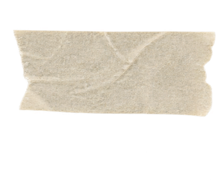

01 먼저 정한 규칙
위협이 생기는 순간, 덮을 수 있는 칸이 있어야만 생긴다.
공정성 규칙 · 나머지보다 먼저 정함
덮을 칸이 없으면 그 위협은 아예 만들지 않습니다. 막을 수 없는 판은 처음부터 나오지 않게 했습니다.

02 다시 정한 문제
재미를 숫자로 잰다
공정성만 기계로 재고, 재미는 직접 플레이해 보고 판단한다
테스트 통과와 실제 화면 동작은 따로 확인했습니다.
03 실제로 나온 결과
- 무작위로 둔 500판에서 덮을 수 없는 위협 0건정해진 시드 · 한 판 400수까지 · 사람이 둔 판은 아님
- 단위 테스트 90/90규칙 하나하나를 따로 검사
- 화면 연결 테스트 16/16규칙이 화면에서도 그대로 도는지
- 같은 시드면 100% 재현화면 상태와 점수가 매번 같게 나옴
측정 기록 2026.09.07 · 재현 2026.07.05
04 스토어에서 배운 것
닫는 코드가 있다는 것과 실제로 닫힌다는 것은 다르다.
ONE store 심사 1차 반려 사유 · 게임오버 뒤 「종료하기」를 눌러도 앱이 안 닫힘 · 2026.09
→ 고친 판 v1.0.1로 바꿔 다시 냈습니다.
05 누가 무엇을
구현은 AI가 했습니다.
기획, 플레이 피드백, 검증 기준은 제가 쥐었습니다. 12번 주고받았고 약 3일 걸렸습니다.
외부 라이브러리 0HTML 한 장 118KB
06 아직 모르는 것
- 다른 사람이 플레이한 기록이 없습니다
- 500판은 무작위로 둔 것이라 사람이 두는 수와 다릅니다
- 스토어 재심사 결과는 아직 확인하지 못했습니다